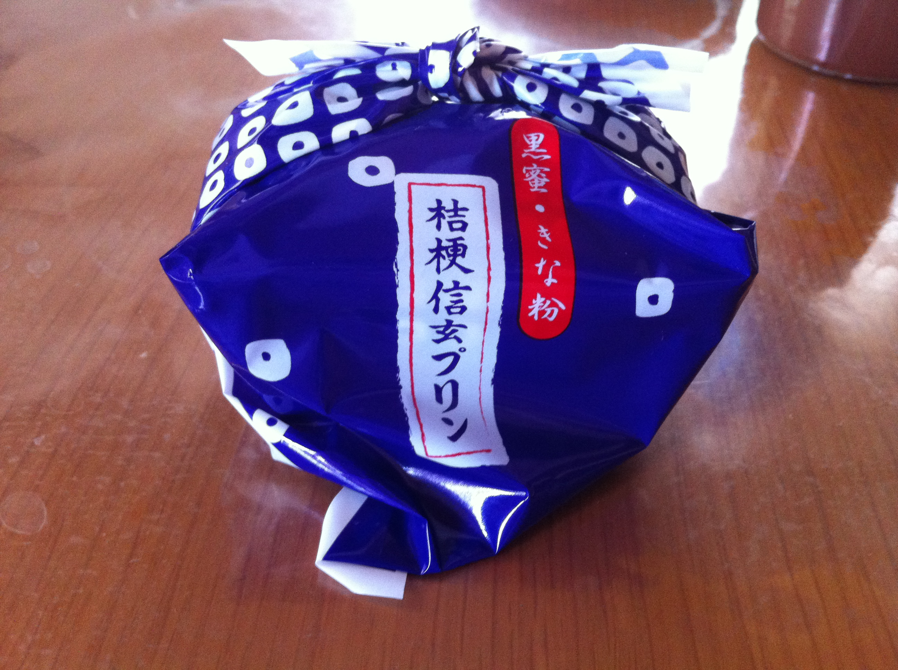

自己紹介!!
| 名前 | yossy | 部活 | デジクリ 軽音楽同好会 高校時代は陸上部でした。 |
|---|
好きなこと・もの
音楽
高校の時に軽音楽部の友達が多くて、かなり影響を受けました。
好きなアーティストは（にわかだけど）、
| 邦楽 | ゆず、コブクロ、BUMP OF CHICKEN、高橋優、 [Alexandros]、クリープハイプ、KANA-BOON、GOOD ON THE REEL |
|---|---|
| 洋楽 | Michael Jackson、Carpenters、The Beatles、oasis、Green Day |
| アニソン | Supercell(やなぎなぎ)、水樹奈々、ガルデモ、fripSide、藍井エイル、LISA |
あたりです。他にもいろいろ。現在いろいろなジャンルを吸収中。
アニメ、ラノベ、ゲーム
情報工らしい趣味です。
なんとなくマンガよりラノベの方が性に合います。
きっかけはとらドラ！と禁書目録で、唯一泣いたのはCLANNADです。
割と何でも見ます。
ゲームはFFが好きです。(最近のもの除く)
スマホゲームが苦手で、、、(飽き性です)
Apple
Appleに関しては間違いなく信者です。
使っていた(る)機種は、LC630&Perfoma 555(漢字Talk7.5)、PowerBook 550c(〃)、
iBook G3(Mac OS 9.x & 10.0)、iBook G4(OS X 10.4)、MacBook Pro(10.10)、
iPod classic、iPod touch(1G,2G,5G)、iPhone(4,5s)です。
気持ち悪いですね（笑）
スキー
全然滑れませんが、行ったときすごく楽しかった！
学生のうちに遊びに行きたいです。ちょうど今ならリフト券割引だし！
コーヒー・紅茶
親戚が喫茶店を経営していて、その影響で好きになりました
コーヒーは酸味の少ない深煎りのものが好み。紅茶は現在研究中。
コーヒー研究会には入っていないんですが…（少し迷ってる）
山梨ってどんなところ？
僕の故郷、「東京から最も近い本当の田舎」山梨県を紹介します。
たまに話題になるけれども（例えばマツコデラックスの某番組で
方言ワースト1位を獲得など）
ぶっちゃけ知らない人が多いと思うので、
ちょっとは魅力あるところを紹介していきます！
夏休みにでもぜひ寄ってくりょうし！
有名な観光地！！
富士山エリア（郡内地方と言います）
富士山
山梨の名所といえばこれしかないというレベルで有名な世界文化遺産かつ日本一高い山。
静岡側からの富士山を「表富士」、山梨側からの富士山を「裏富士」と言ったりします。
いくら「表」だからと言って、富士山＝静岡と言われると山梨県民怒ります（笑）
富士急ハイランド
結構知名度の高い遊園地。某ランドには負けますが。
FUJIYAMAやドドンパなど、日本最大級のジェットコースターがいくつもあります。
戦慄迷宮などのお化け屋敷系も人気。
大学生が「ウェーイ」するのにはもってこいだけど、絶叫系苦手な人は気を付けましょう。
富士五湖
富士山周辺には、昔の噴火跡に出来たとされる5つの湖があります。
ちょっとマニアックなもの
富士山の湧き水が小さな滝のように流れ出している名勝。8箇所あります。とってもきれい！
洞窟です。中は場所によっては神秘的。暗いのでドキドキイベント起こせます。
自殺の名所。この森に入ると磁石すら狂う。
盆地エリア
国中地方といいます。県庁所在地甲府があるほう。
清里・白州エリア
有名な別荘地・リゾート地・キャンプ地です
合宿とかでキャンプするならここがオススメ！
空気・水がとても綺麗です。「尾白川」とか本当に底まで透き通っています。
よくマンガとかで見るキャンプ場の河原で遊ぶシーンみたいなとこ、マジであります。
バーベキューはもちろん、夜はキャンプファイヤー（要準備）、ナイトハイクできます。
"Boys be ambitios!"のクラーク博士ゆかりの地。
有名なのはアイスクリーム。濃厚です。
最近全国にあるらしいお菓子屋「シャトレーゼ」の工場があり、
見学ツアーに参加するとなんとアイス食べ放題が付いてくる！
武田神社
戦国武将・武田信玄を祀った神社です。
甲府に来たらたぶん寄る観光地。
これといって、ないんですけどね…
甲府駅からの坂を歩くと地獄。
ぶっちゃけネタ切れ。基本学生より年齢の高い人向けのところが多いので、、、
大学生は山梨にはキャンプしに来ればそれでいいと思います。笑
お土産ランキング！
5位 澤田屋の黒玉
栗を黒蜜でつつんだ和菓子。とても甘いです。大人向け。
4位 栗せんべい・山家焼
栗の形をした、栗をまぶしたせんべいと、ピーナッツバターせんべい。知られてないけど、意外とおいしい。全年齢向け。
番外編 ワイン
山梨といえばフルーツ、特にぶどう、そしてワイン。石和というところにワイナリーがたくさんあります。お酒は20歳になってから！
3位 桔梗信玄餅
山梨土産といえばこれ。黒蜜をこぼさないためには、先に一個餅を出してその隙間に蜜をいれることです！ 全年齢向け。
2位 清月イタリアンロール
我がふるさと南アルプス市のお菓子屋さんのロールケーキ。モンドセレクション常連。塩味の効い皮が特徴。若者向け。
番外編 ほうとう
お土産ではないけれど。うどんより幅広い麺を味噌で煮込む郷土料理。今では冷凍食品やインスタントで買えちゃったり。
そして栄えある第1位は...
1位 桔梗信玄プリン
信玄餅がそのままプリンに！ 意外なおいしさ。黒蜜かけないほうが美味しいです。若者向け。